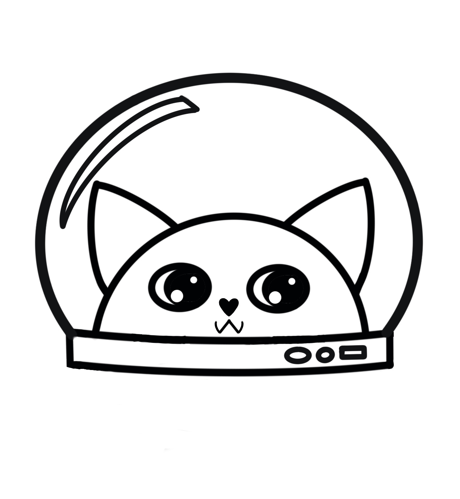
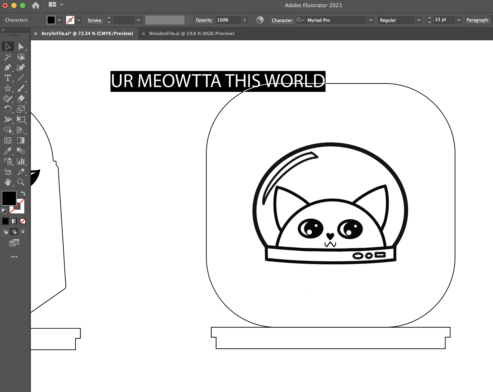
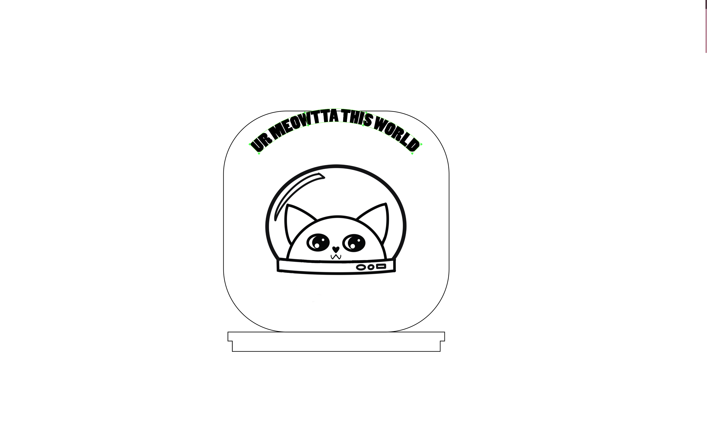
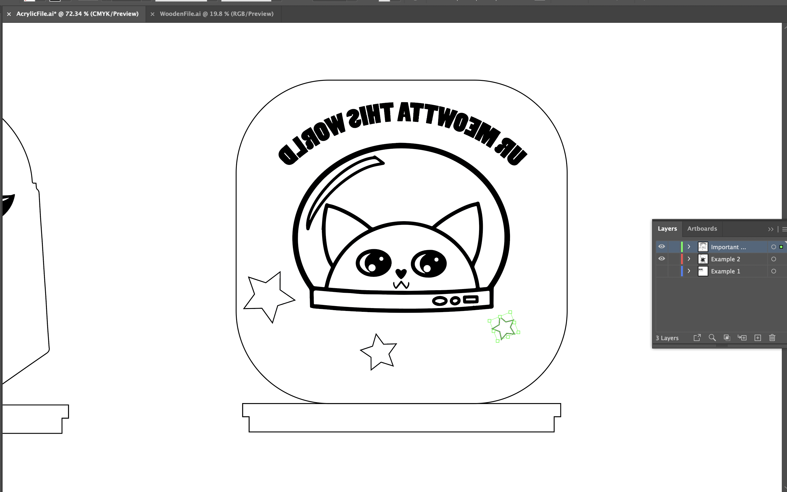
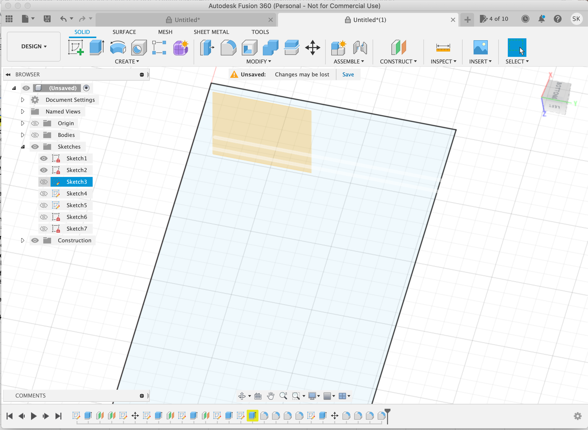
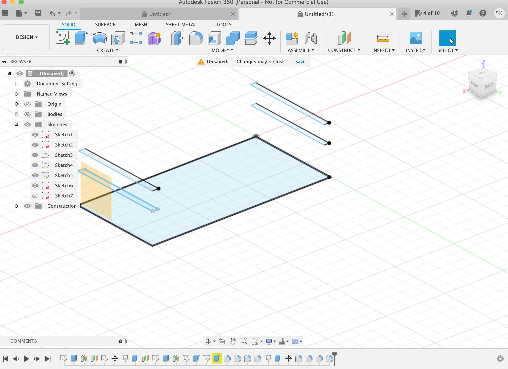
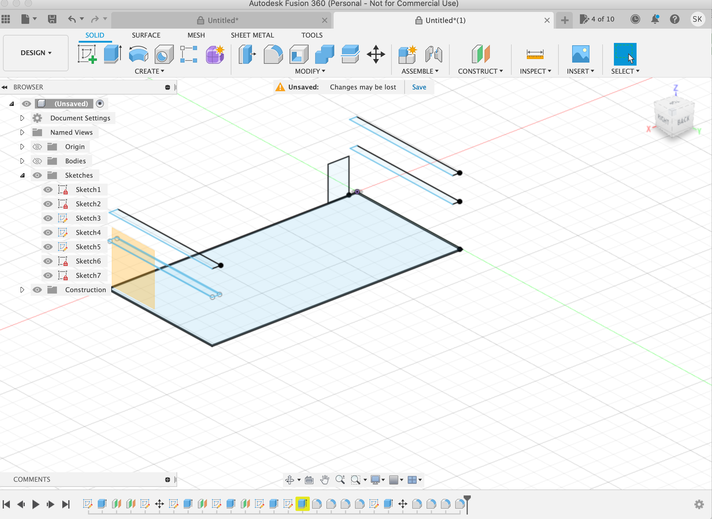
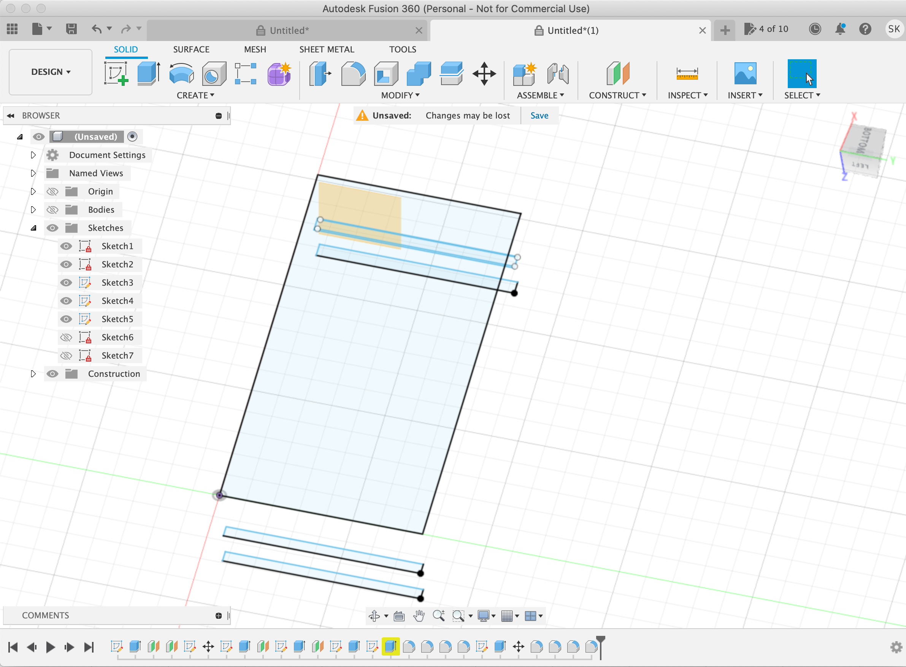
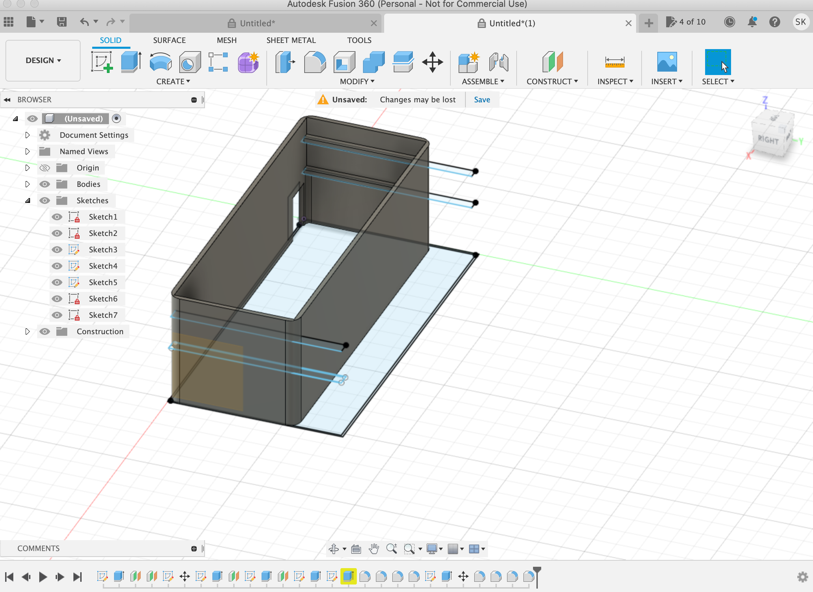
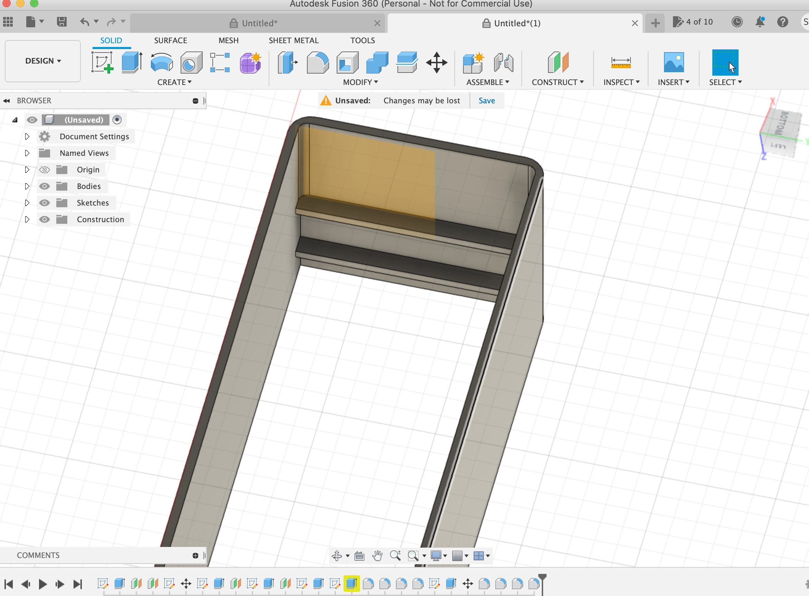

INTEGRATE
This project was to make a little lamp, using muuulltiple skills! It was definitely a little messy and chaotic of a process, but it was super cool to do!
The first step was learning how to make the board that goes inside and will connect to the lights. I got to go to the digital lab and learn to solder! I actually really enjoyed it, the sparkly metal paste was pretty! My art student tendencies definitely came out as I was quickly plopping the paste down, delicately adding it's little connector, and sodlering it together.


Unfortunately, my little board was not the one that ended up in my final project due to . . . I honestly don't even know what the issues were with the technical pieces! But I do know Tuna made everyone's boards and light strips haha! My next step was to design the acrylic plate that would light up!
My idea was to make a catstronaut! A kitty astronaut. To do this, I actually edited my catpuccino design from my first project! Then, I uploaded that into AI to add words and extra details!
   here is the final file for the acrylic slab! - file:///Users/sophiekahn/Downloads/CATAcrylicFile%20(1)%20(1).svg

Now it was time to design the 3D printed case for all the pieces in fusion!
I had a bit of trouble getting the planes in the right spots, but eventually I figued it out! After making it solid I did have to reedit my sketch compenent a bit, and I would check some of the mistakes by making it solid, then going back and editing!     
Here is the file for the case! https://drive.google.com/drive/folders/1pbKgiQ0QeeucmpsudmQJC0mxc20fFqLh
With the design ready, I sent it to the ObiWan printer! I had to leave for work for the weekend, but even though my first print got wonky, Madison was nice enough to reprint it for me! Thanks Madison!
Now it was time to assemble all the pieces!
I quickly discovered that my hole for the cord to go through was on the wrong side (oops!) but it was nothing some clippers, hot glue, and a bit of sparkle and fun couldn't fix! I madde a new hole, as well as adding a cute little surprise in the now extra hole.


My little lamp definitely ended up being "Meowtta this world"!
Thanks for reading!